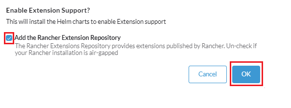
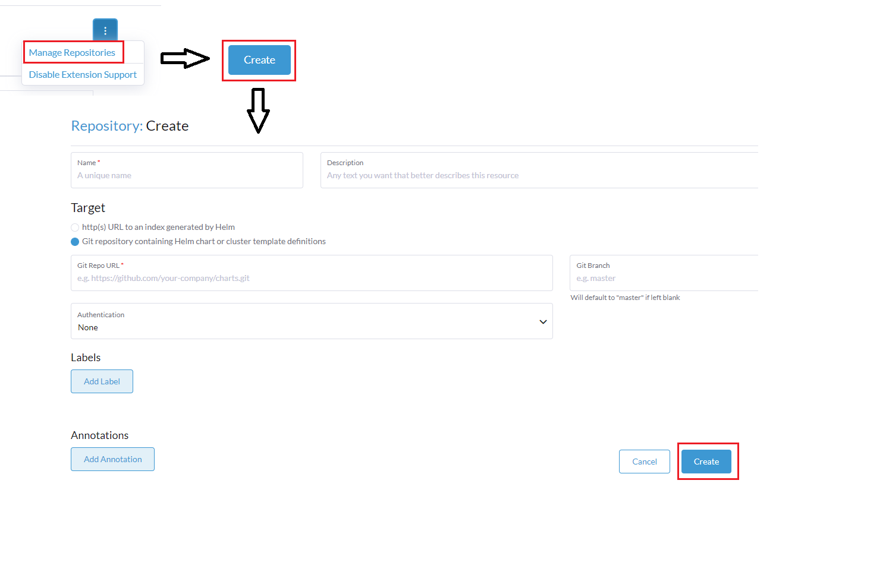
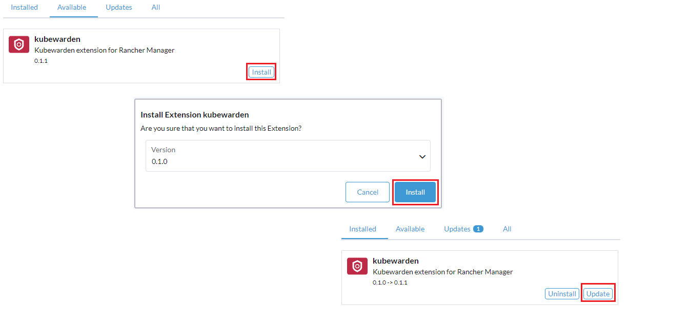
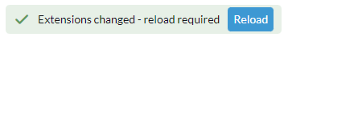
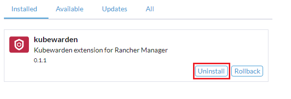
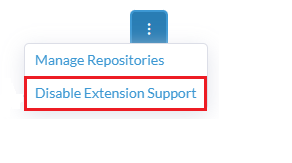

扩展
扩展允许用户、开发者、合作伙伴和客户扩展和增强 Rancher 用户界面。此外，用户可以独立于 Rancher 版本对其用户界面功能进行更改和创建增强。扩展将使用户能够在 Rancher 之上构建，以更好地根据各自的环境进行定制。请注意，用户还将能够更新到新版本以及回滚到先前版本。
扩展是 Helm 图表，只能在一个集群中安装一次；因此，这些图表已被简化并与 Apps 下列出的通用 Helm 图表分开。
内置的 Rancher 扩展示例包括 Fleet、Explorer 和 Harvester。使用扩展 API 的其他扩展示例包括 Kubewarden 和 Elemental，可以手动添加。
安装扩展
-
在 Configuration 下点击 ☰ > Extensions。
-
如果在 Apps 中尚未安装，您必须通过点击 Enable 按钮来启用扩展操作员。
-
如果您的安装不是隔离的，请点击 OK 以添加 Rancher 扩展储存库。否则，请取消选中该框并点击 OK。

-
-
在 Extensions 页面上，点击 Available 标签以选择要安装的扩展。
-
如果没有扩展显示为可用，您可以手动添加储存库，如下所示：
4.1.在屏幕右上角，点击 ⋮ > 管理储存库 > 创建。
4.2.添加所需的储存库名称，并确保还指定 Git Repo URL 和 Git Branch。
4.3.再次点击右下角的 创建 以完成。

-
在 可用*选项卡下，点击所需扩展和版本的 *安装，如下例所示。您还可以从此屏幕更新扩展，如果有可用的更新，*更新*按钮将出现在扩展上。

-
单击扩展成功安装后出现的*重新加载*页面按钮。请注意，刚安装扩展的登录用户在未重新加载页面的情况下 不会 看到 UI 的变化。

更新和升级扩展
-
在 Configuration 下点击 ☰ > Extensions。
-
选择*更新*选项卡。
-
单击 更新。
如果有新版本的扩展，*可用*选项卡中与扩展相关的卡片上也会显示*更新*按钮。
删除扩展储存库
-
在 Configuration 下点击 ☰ > Extensions。
-
在右上角，单击*⋮ > 管理储存库*。
-
找到您想要删除的扩展储存库名称。选择储存库名称旁边的复选框，然后单击*删除*。
卸载扩展
有两种方法可以卸载或禁用扩展：
-
在 已安装 标签下，点击您希望去除的扩展上的 卸载 按钮。

-
在扩展管理页面，点击 ⋮ > 禁用扩展支持。这将禁用所有已安装的扩展。

|
禁用扩展后，您必须重新加载页面，否则可能会出现显示问题。 |
开发扩展
要学习如何开发自己的扩展，请参考官方 入门指南。
在隔离环境中使用扩展
如果您打算在隔离环境中使用扩展，您必须在完成某些任务之前执行一些额外步骤。
在隔离环境中访问 Rancher UI 扩展
Rancher 通过 ui-plugin-catalog 容器镜像提供一些扩展，例如 Kubewarden 和 Elemental。如果您尝试在隔离环境中安装这些扩展，您必须使 ui-plugin-catalog 镜像可访问。
-
将
ui-plugin-catalog镜像镜像到私有注册表：
export REGISTRY_ENDPOINT=<my-private-registry-endpoint> # e.g. "my-private-registry.com"
docker pull rancher/ui-plugin-catalog:<tag>
docker tag rancher/ui-plugin-catalog:<tag> $REGISTRY_ENDPOINT/rancher/ui-plugin-catalog:<tag>
docker push $REGISTRY_ENDPOINT/rancher/ui-plugin-catalog:<tag>
2. Use the mirrored image to create a Kubernetes https://kubernetes.io/docs/concepts/workloads/controllers/deployment/[deployment]:
```yaml
apiVersion: apps/v1
kind: Deployment
metadata:
name: ui-plugin-catalog
namespace: cattle-ui-plugin-system
labels:
catalog.cattle.io/ui-extensions-catalog-image: ui-plugin-catalog
spec:
replicas: 1
selector:
matchLabels:
catalog.cattle.io/ui-extensions-catalog-image: ui-plugin-catalog
template:
metadata:
namespace: cattle-ui-plugin-system
labels:
catalog.cattle.io/ui-extensions-catalog-image: ui-plugin-catalog
spec:
containers:
- name: server
image: <my-private-registry-endpoint>/rancher/ui-plugin-catalog:<tag>
imagePullPolicy: Always
imagePullSecrets:
- name: <my-registry-credentials>-
通过创建一个 ClusterIP 服务 来暴露部署：
```yaml
apiVersion: v1
kind:服务
metadata:
名称: ui-plugin-catalog-svc
命名空间: cattle-ui-plugin-system
spec:
端口：-
名称: catalog-svc-port
端口：8080
协议：
TCP
目标端口：
8080
选择器：catalog.cattle.io/ui-extensions-catalog-image：ui-plugin-catalog
类型：TCP目标端口：8080选择器：catalog.cattle.io/ui-extensions-catalog-image：ui-plugin-catalog类型：ClusterIP`
-
-
创建一个ClusterRepo，目标为ClusterIP服务：
apiVersion: catalog.cattle.io/v1 kind: ClusterRepo metadata: name: ui-plugin-catalog-repo spec: url: http://ui-plugin-catalog-svc.cattle-ui-plugin-system:8080
在成功设置这些资源后，您可以将扩展从`ui-plugin-charts`清单安装到您的隔离环境中。
在隔离环境中导入和安装扩展
-
找到您想要作为扩展导入的容器镜像仓库的地址。您应该导入并使用最新标记版本的镜像，以确保您获得最新的功能和安全更新。
-
(可选) 如果容器镜像是私有的：创建一个在`cattle-ui-plugin-system`命名空间内的注册表密钥。在*注册表域名*字段中输入镜像地址的域名。
-
-
单击*☰，然后在*Configuration*下选择*Extensions。
-
在右上角，点击 ⋮ > 管理扩展目录。
-
选择*Import Extension Catalog*按钮。
-
在*目录图像参考*字段中输入图像地址。
-
(可选) 如果容器镜像是私有的，从*Pull Secrets*下拉菜单中选择您刚刚创建的密钥。
-
-
单击*加载*。扩展现在将处于*待处理*状态。
-
返回到*扩展*页面。
-
选择*可用*选项卡，然后点击*重新加载*以确保扩展列表是最新的。
-
找到您刚刚添加的扩展，点击*安装*。
在隔离环境中更新和升级扩展储存库
非隔离的扩展储存库会自动更新。如果扩展储存库是隔离的，您必须手动更新。
首先，通过遵循最初导入和安装扩展储存库的相同步骤，将最新更改镜像到您的私有注册表。
在镜像最新更改后，按照以下步骤操作：
-
点击*☰ > 本地*.
-
从侧边栏中选择 。
-
从名称空间下拉菜单中选择 cattle-ui-plugin-system。
-
找到 cattle-ui-plugin-system 的名称空间。
-
选择
ui-plugin-catalog部署。 -
点击 ⋮ > 编辑配置。
-
在部署的容器中，将 容器镜像 字段更新为最新镜像。
-
单击 保存。